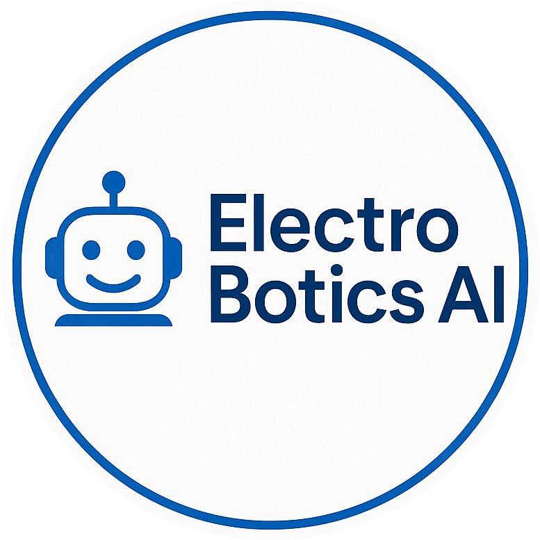
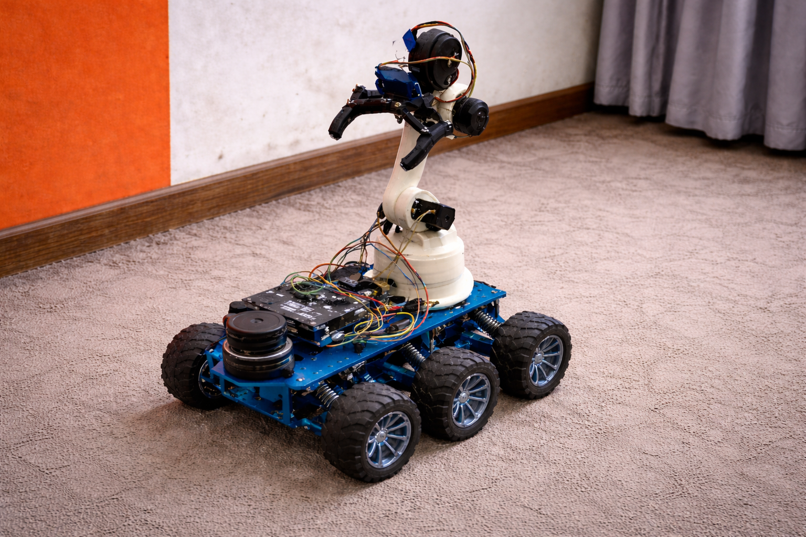

Robotics Software Engineer
I am a Robotics Software Engineer specializing in motion planning, navigation, and
control using ROS2. I have hands-on
experience building real-time autonomous robotic systems, including path planning, trajectory tracking,
and obstacle aware navigation. My work focuses on designing and tuning control algorithms, integrating
localization and planning
modules, and ensuring smooth robot motion in dynamic environments. I also work on combining embedded
systems
with ROS2 to build reliable, real-world robotic solutions.
With a background in Artificial Intelligence and CyberSecurity (IIT Patna), I develop
robust systems that integrate SLAM, computer vision, and AI-driven control loops. Whether it's a
LiDAR-based mobile robot or a vision-controlled robotic arm, my goal is to create hardware that
interacts intelligently with its environment.
2024 - 2028 | IIT Patna
Focus: AI, ML, DL, Cyber-Physical Systems, and Secure Robotics.
My journey began with a curiosity for how things work. From school-time experiments in custom electronics to advanced IoT prototyping, I have spent over 7 years documenting the transition from manual electronic tools to autonomous robotic intelligence.
Key Milestones: Custom Tool Engineering, DIY, Electronics & Circuits, Audio System Prototyping, IoT Sensor Networks, and Early-stage Mechatronics.
Explore Evolution ArchiveIn this project, I implemented a complete autonomous navigation pipeline using the ROS2 Nav2 stack. The system integrates localization (AMCL), global planning (NavFn), and local control (DWB controller) to enable a mobile robot to navigate to target goals in a simulated environment. I configured costmaps, behavior trees, and recovery behaviors to handle dynamic obstacles and ensure robust navigation. The robot uses LiDAR and odometry data for real-time localization and obstacle avoidance, demonstrating end-to-end autonomous navigation in Gazebo and RViz.
In this project, I built a trajectory tracking controller in ROS2 that allows a mobile robot to follow a given path smoothly. The controller receives a sequence of waypoints (trajectory) and continuously calculates the required linear and angular velocity to move the robot toward the next target point. It uses odometry data to track the robot’s current position and adjusts motion in real time to stay on the path. This project demonstrates how robots follow planned paths using control logic in a simulated environment.
In this project, I implemented a custom Dynamic Window Approach (DWA) local planner in ROS 2 for real-time mobile robot motion planning. The planner evaluates multiple velocity samples based on robot kinematic constraints and scores them using obstacle proximity, heading alignment, and velocity cost functions. It consumes LiDAR and odometry data to generate safe and smooth velocity commands, enabling obstacle-aware navigation in a simulated environment.
In this project, I built an Autonomous Mobile Robot (AMR) using a Raspberry Pi and RPLIDAR, integrating ROS 2 for real-time LiDAR data processing and robot control. The system is capable of basic path planning and autonomous navigation, demonstrating core mobile robotics concepts such as sensor integration, perception pipelines, and autonomous motion in a real hardware setup.

In this project, I designed and simulated a 6-joint (6-DOF) robotic manipulator using ROS 2. The robot was modeled using URDF and visualized in RViz, where the complete kinematic chain, joint frames, and links are rendered accurately. I integrated MoveIt for motion planning, enabling interactive goal setting, inverse kinematics solving, collision-aware trajectory planning, and smooth joint-space execution. The system demonstrates real-time planning and control of the robotic arm using MoveIt’s MotionPlanning interface, similar to industrial robotic manipulation workflows.
In this project, I’m developing a surveillance quadruped designed for high mobility in complex environments. Currently, I’ve successfully implemented and synchronized forward and backward gait cycles using real-time motor control. By focusing on inverse kinematics and gait dynamics, I’ve ensured the robot remains stable across different speeds. This serves as a strong foundation for my next steps: improving terrain adaptation and adding autonomous navigation capabilities.
In this project, I engineered a robotic hand system capable of real-time human gesture mimicry using a Computer Vision-based control loop. By leveraging OpenCV and MediaPipe, the system calculates the dynamic distance between the hand tips and MCP (metacarpophalangeal) joints to drive individual servo motors for each finger. This ensures high-fidelity movement synchronization between the user and the robotic hardware. My ultimate goal is to evolve this prototype into an affordable, high-performance prosthetic for individuals with disabilities, focusing on making assistive robotics both accessible and technically robust.
This project involved the end-to-end engineering of a custom quadcopter, transitioning from an F450 base to a high-stability carbon fiber frame. Controlled by a Pixhawk flight controller and powered by BLDC motors, the system was refined through rigorous debugging of ESC calibration, motor orientation, and electromagnetic interference. By resolving GPS altitude discrepancies and magnetometer field errors, I achieved a stable, autonomous-ready flight platform. The result is a robust UAV demonstrating proficiency in system integration, vibration mitigation, and sensor fusion.
In this project, I designed and built a scale F-22 Raptor to bridge the gap between theoretical fluid dynamics and real-world aviation. Using a high-KV BLDC motor for rapid thrust and a Flysky RC system, I explored how high-speed airflow interacts with airfoil profiles. A critical focus was mastering Center of Gravity (CoG) placement to ensure longitudinal stability. By balancing lift-to-drag ratios with precise control surface dynamics, I gained hands-on experience in how wing geometry and weight distribution dictate flight performance.
In this project, I developed a Computer Vision-based gesture control system using OpenCV and MediaPipe for real-time hand tracking and landmark detection. The system is designed to recognize specific gestures, such as a thumb-up or thumb-down, and transmit control signals via serial communication from a Python script to an Arduino. While I used a light bulb as a visual output to validate gesture triggers, the core objective was to master the integration of software-driven AI with hardware actuators. This setup demonstrates a robust workflow for building Human-Machine Interfaces (HMI) and IoT systems where physical devices are controlled through intelligent visual feedback.
In this project, I engineered a mechanical gearbox for an ornithopter system to mimic the biological kinematics of bird flight. By converting motor torque into synchronized flapping cycles, I’ve created a platform for researching biomimetic aerodynamics and stealth-focused surveillance. Unlike traditional drones, this system focuses on how airfoil geometry and wing-beat frequency generate lift. It serves as a high-fidelity testbed for studying bio-inspired locomotion and developing drones with low acoustic signatures.